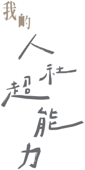

永續未來術My HSS Superpower: Shaping A Sustainable Future
- 透視眼
- 共鳴耳
- 敘事筆
- 改變手


PROLOGUE
展覽前言
提到「文化永續」，你腦中浮現的是古蹟修復，或是博物館裡的陳列品？
對人文社會學院而言，文化絕非靜態的遺產或被定格的過去，而是一場在理解、反思與行動中持續生成的實踐冒險。
從大學部的跨界探索到研究所的深耕細作，人社院各個系所交織成一張充滿生命力的網絡，培養出具備知性反思與公共責任的文化工作者，在講究理解與實踐的交會中，為世界注入倫理感與創新能量，也構築一套面對未來世界的價值方案。
我們誠摯邀請你走進展場，見證文化如何在每一天的實踐中，綻放出最動人的永續生機。